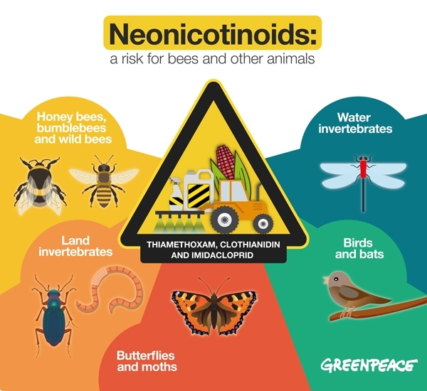

What are pesticides?
Pesticides are substances used for eliminating pests, in other words
unwanted insects. Amongst those insects include bees. There are several
ways that bees are harmed with the use or pesticides including direct contact
which can causes immediate death, or direct contact and the bees return
to their hives, causing a larger impact.
[2]
Agricultural Usage
Due to the effectiveness against sucking insects, soil insects,
and even flees on domestic animals, there is a large amount of
pesticides used in agriculture. Some methods of application include:
[1]
-
Water Irrigation - mixing the chemicals with the water
-
Seed Coating - covering seeds with external enhance and protect their germination
-
Spraying - gaseous release

Different types of Neonics
All derived from the Neonicotinoids family, the following are the most common pesticide used.
Each option is created by a different manufacturer, nevertheless derived from nicotine:
-
Acetamiprid
-
Clothianidin
-
Thiacloprid
-
Thiamethoxam
References
“Neonicotinoid”, WikiPedia, https://en.wikipedia.org/wiki/Neonicotinoid
“Protecting Pollinators from Pesticides”, University of Georgia Honey Bee Program,
https://bees.caes.uga.edu/bees-beekeeping-pollination/pollination/
pollination-protecting-pollinators-from-pesticides.html.